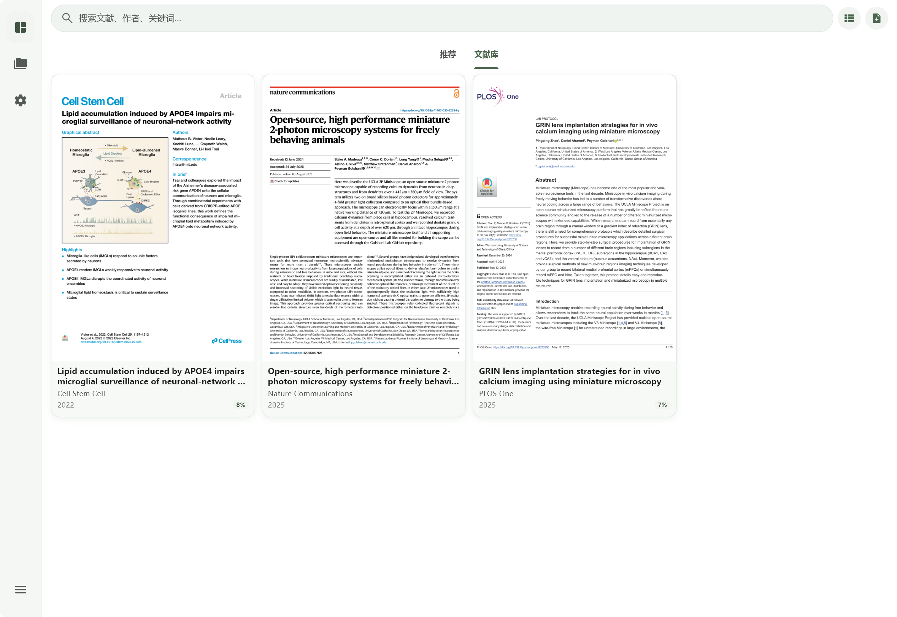

学术文献阅读与管理
在手机和桌面，
好好读论文。
把复杂的 PDF 变成好读的文献。重排、翻译、图表与问答，放在同一个阅读空间里。
Android · Windows · macOS



读得顺
复杂版面重新排，原文与译文对照。字号与主题按你的习惯调整。
看得明白
把图表展开，带着全文提问。需要核对时，回到原文继续读。
放得有序
检索、分类、Zotero 同步与云备份，让读过的文献有处可寻。
阅读与理解
小屏幕，也容得下整篇论文。
从双栏 PDF 到连贯的段落，在通勤或桌前都能接着读。图表、译文和问题，始终围绕同一篇文献。

适合小屏的重排
通过 PaddleOCR 或 MinerU 解析版面，把段落、公式与图表整理为可连续阅读的内容。

图表提取
图表单独打开、缩放、复制与分享。看清细节，再回到正文。

随时回到原文
保留 PDF 的页码与排版。需要核对公式、引用或上下文时，回到原始页面。
截图来自实际应用，展示配色已适配网站主题；界面可能随版本变化。
文献与工作流
读过的，和接下来要读的。
找到文献，也理清文献
多源检索与元数据解析，配合分类、标签和 AI 自动命名，整理自己的文献库。
接上已有的文献库
支持 Zotero 本地文献导入与双向同步，延续已有的文献管理习惯。
备份到自己的存储
连接 S3 或 WebDAV，备份与恢复文献数据，也可以设置自动备份。
带着全文，向模型提问
基于提取的正文与图表问答、翻译段落。支持 OpenAI、Anthropic、Google 与兼容接口。
文献保存在本地。OCR、翻译与 AI 问答会使用你配置的服务；同步和备份需另行配置。
服务与数据 ↗开始使用
从下一篇论文开始。
选择设备对应的安装包。源代码与版本记录都在 GitHub 上公开。
Android APK · arm64-v8a / armeabi-v7a前往 GitHub Releases
Windows x64 · 安装器或便携 ZIP前往 GitHub Releases
macOS DMG · Apple silicon前往 GitHub Releases
macOS 版本适用于 Apple 芯片，尚未签名；首次打开需在系统「隐私与安全性」中放行。Linux 暂不支持。 下载与安装 ↗